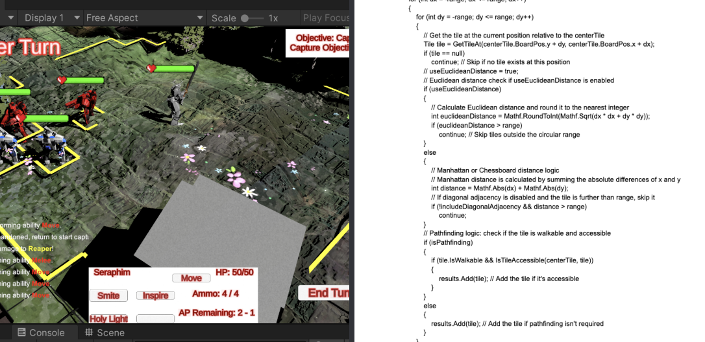
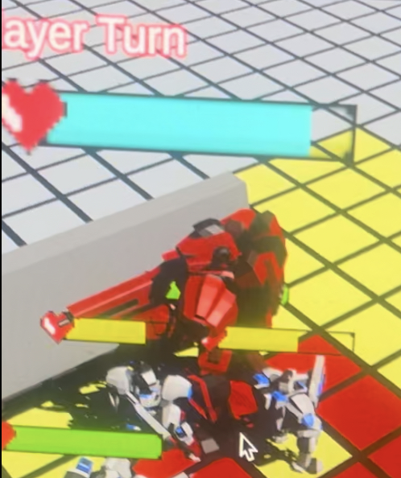
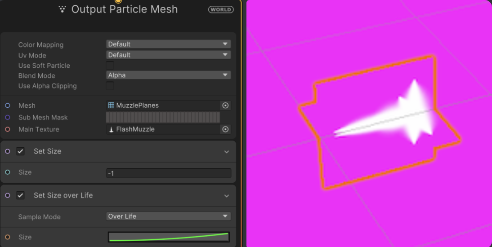

Iron Testament
Programmer & Audio Designer
Unity | C# | GarageBand | Wwise | Blender
A game set to be showcased to the USC Games Expo, Iron Testament is a turn-based game made by Rat Economy, a group 19 of USC games students. You command a cohort of robots, each with unique abilities, to reclaim Earth from the AI robot uprising. Leading a sect of life-worshipping machines, players strategically utilize their strengths to outmaneuver enemy forces. Every battle requires careful planning, as position, abilities, and tactical decisions shape the outcome.
Programming
A* Pathfinding Algorithm
Throughout weekly and bi-weekly sprints, I made use of A* pathfinding so that players can move their units to desired spots on the grid and over time made use of the line renderer to follow through with what path they were going to take. These content from the team showcase the parts I have worked on.
A* Movement.
Movement V2
Conditional A* to not move on separate islands
Before and After A* Added
Transparency Trigger Based on Raycast
The transparency effect is triggered when an object obstructs the direct line of sight between the camera and a unit, using a raycast to detect intersections, but it only activates when the camera is close to the object due to the raycast's range limitation.
Tile Indicators
I was also tasked to make patterns around the grid of the bots for attack or range repectively corresponding to the tiles highlted Manhattan or Euclidean so that the player knows how far they can use their abilities.
Tiles Highlighed Euclidean or Manhattan
Programming the UI
I was also responsible for creating UI such as health bars that billboard to the camera and display proposed health in cyan if damaged is dealed. If actual damage was dealed, it would lerp above the bots and I was also in charge of making an in-game console system that logs in game messages to appear in a scrollable console on the left side of the screen similar to that of Minecraft or Call of Duty; an in-game chat or log panel, allowing messages to be added from in-game activity, displayed with a fade-out effect, removed over time, and toggled between full history and recent logs while ensuring scroll-to-bottom functionality. For color I used Rich-Text.
Billboarding UI to Camera
Lerped Messages
In-Game Console Log
Rich-Text for Color

Muzzle Flash Effect
For one of the sprints, I used Photoshop to draw the flash and Blender to model the muzzle mesh. I turned it into a VFX effect, and this was used for one of the units, the Reaper, abilities.
Drew Photoshop Flash
VFX and Blender
Muzzle Flash Ability In-Game
Audio Design
For the Purifier mission, I was responsible for composing a techno-synth-based soundtrack that dynamically transitions between active and passive states based on gameplay. I created prototypes of metallic clanging effects and futuristic weapon sounds to align with the faction's militant and electronic aesthetic. The music shifts into an active version when combat begins and returns to a passive state when no attacks occur, ensuring a seamless auditory experience. This system was designed for integration into Wwise, allowing for real-time audio transitions within Unity, enhancing immersion and responsiveness to player actions.
These audio sounds I designed were done in layers for enhanced sound:
Metal Impact:
Futuristic Rifle: